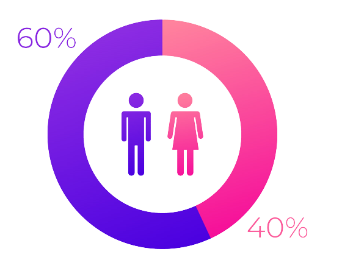

<section class="w-screen h-screen  justify-center">
  <div class="flex flex-col  md:flex-row ml-10 mt-20 md:mt-0 md:ml-0  w-full h-screen justify-center ">
    <div class="flex flex-col md:flex-row   md:mt-12 justify-center  items-center rounded-3xl  w-4/5  h-4/5 md:w-7/12 md:h-3/5 bg-purple-300 shadow-md rounded px-8 pt-6 pb-8 mb-4">
      <div class="flex flex-col mt-14 md:mt-0  w-full h-6/12  md:w-9/12 md:h-full justify-center items-center">
        <div class=" justify-center md:mt-0">
          <h1 class=" md:justify-end  text-md md:text-xl font-bold font-serif text-purple-500">
            Calculadora de muestra
          </h1>
        </div>

        <div class=" w-11/12  md:w-11/12 ml-1 mt-4 h-11/12">
          <form (ngSubmit)="onSubmit()" [formGroup]="calculoForm"  class="">
            <div class=" md:mb-0 flex   flex-col  justify-center items-center md:flex-row   md:pb-8">

              <div class="flex  w-3/4 items-center ">

                <input
                  type="radio"
                  class=" "
                  formControlName="poblationForm"
                  name="poblationForm"
                  id="poblationForm"
                  value="opcion1"
                />
                <label class="   md:ml-4 font-serif">Poblacion finita</label>
              </div>
              <div class=" flex  flex-row w-3/4 ">

                <input
                  type="radio"
                  class=" md:ml-20"
                  formControlName="poblationForm"
                  name="poblationForm"
                  id="poblationForm"
                  value="opcion2"
                  [(ngModel)]="checkBoxMarcado"
                />
                <label class=" md:ml-4 font-serif">Poblacion infinita</label>
              </div>
            </div>
            <div class="mb-6 flex flex-col md:flex-row justify-start">
              <label class="font-serif w-40 text-gray-700 text-sm font-bold">
                Nivel de confianza :
              </label>
              <input
                class="shadow appearance-none border rounded w-full	 md:w-80 md:py-2 md:px-3 text-gray-700 leading-tight focus:outline-none focus:shadow-outline"
                type="text"
                placeholder="Digite 99 o 95 "
                formControlName="nivel"
                id="nivel"
              />
              <div
                class="bg-red-200"
                *ngIf="this.calculoForm.get('nivel')?.errors?.['pattern']"
              >
                El campo debe ser numerico
              </div>
            </div>
            <div class="mb-2 flex flex-col md:flex-row">
              <label
                class="w-40 font-serif block text-gray-700 text-sm font-bold mb-2"
              >
                Precisión de error:
              </label>
              <input
                class="shadow appearance-none border rounded w-full	 md:w-80 md:py-2 md:px-3 text-gray-700 mb-3 leading-tight focus:outline-none focus:shadow-outline"
                type="text"
                placeholder=""
                formControlName="precision"
                id="precision"
              />
              <div
                class="bg-red-200"
                *ngIf="this.calculoForm.get('precision')?.errors?.['pattern']"
              >
                El campo debe ser numerico
              </div>
            </div>
            <div class="mb-2 flex flex-col md:flex-row">
              <label
                class="block text-gray-700 w-40 font-serif text-sm font-bold md:mb-2"
              >
                Población:
              </label>
              <input
                class="shadow appearance-none border rounded w-full	 md:w-80 md:py-2 md:px-3 text-gray-700 leading-tight focus:outline-none focus:shadow-outline"
                type="text"
                placeholder=""
                formControlName="cantPoblacion"
                id="cantPoblacion"
                [disabled]="checkBoxMarcado"
              />
              <div
                class="bg-red-200"
                *ngIf="this.calculoForm.get('cantPoblacion')?.errors?.['pattern']"
              >
                El campo debe ser numerico
              </div>
            </div>
            <div class="flex w-4/5	 items-center justify-start pt-1 md:pt-8">
              <button
                class="font-serif bg-purple-500 hover:bg-pink-400 text-white font-bold py-2 px-2 rounded-full focus:outline-none focus:shadow-outline"
                type="submit"
                (click)="limpiar()"
              >
                Limpiar
              </button>
              <button
                class="font-serif ml-4 bg-purple-500 hover:bg-pink-400 text-white font-bold py-2 px-2 rounded-full focus:outline-none focus:shadow-outline"
                type="submit"
              >
                Calcular
              </button>
            </div>
          </form>
          
        </div>
      </div>
      <div class="w-full   md:w-2/5 md:h-full flex  md:flex-row  md:flex-col justify-center items-center">
        <div class=" w-0 md:w-9/12 md:h-3/6 md:ml-20 flex justify-center">
          
        </div>
        <div class="w-11/12 h-4/6 rounded-lg md:w-11/12 md:h-3/6 bg-white md:ml-10 justify-center items-center flex flex-col" #formulaDiv>
          <!-- <mathjax [content]="'yourMathContent'"></mathjax> -->
          <h1 [mathjax]="content" class="text-sm"  id="content1" >
            hi            
          </h1>
          <p [mathjax]="content2" class="text-sm" id="content2" >
            h
          </p>
        </div>
      </div>
    </div>
    <div class="flex flex-row mt-4 md:mt-12 ml-2 justify-center   rounded-3xl w-4/5 md:w-1/5 h-4/6 md:h-3/5 bg-purple-300 shadow-md rounded px-8 pt-6 pb-8 md:mb-4">
     <ul class="text-xs font-serif">
      <li> <span class="font-bold">N</span>  = Tamaño de la población</li>
      <li>  <span class="font-bold"> Z  </span>   = Parámetro estadístico que depende el Nivel de Confianza(NC)</li>
      <li> <span class="font-bold"> e </span>  = Error de estimación máximo aceptado</li>
      <li> <span class="font-bold"> p</span>  = Probabilidad de que ocurra el evento estudiado (éxito)</li>
      <li> <span class="font-bold"> q</span> = Probabilida de que no ocurra el evento estudiado</li>
      <br>
      <li> Se utilizará estos dos niveles de confianza   </li>
      <br>
      <li>Para entender más el tema se les deja este link de un canal que explica detalladamente: </li>
      
      <a href="https://www.youtube.com/watch?app=desktop&v=oc8i9g144Y0&ab_channel=fbombab" target="_blank" class="text-blue-500 underline">Oprime aqui</a>
    
     </ul>
    
    </div>

  </div>
</section>
